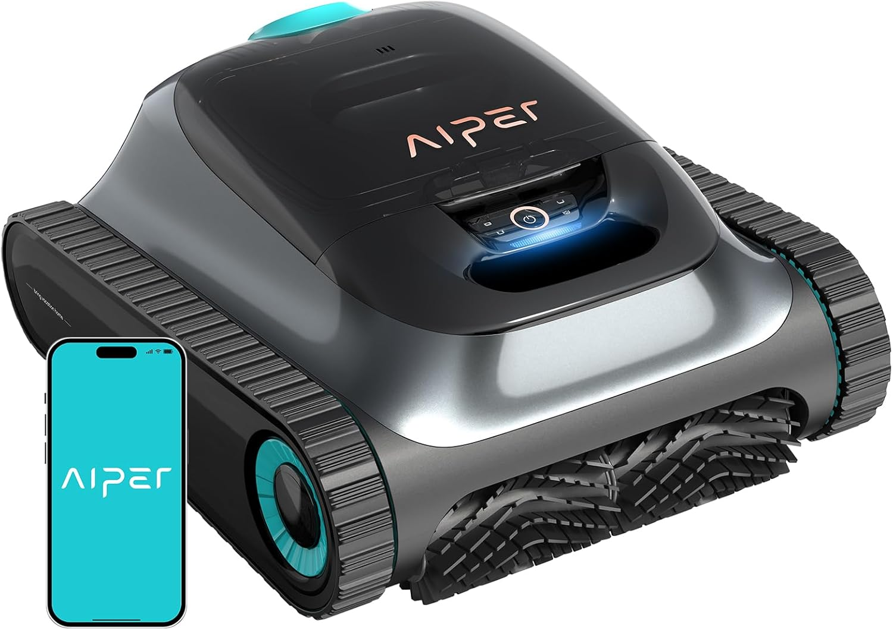
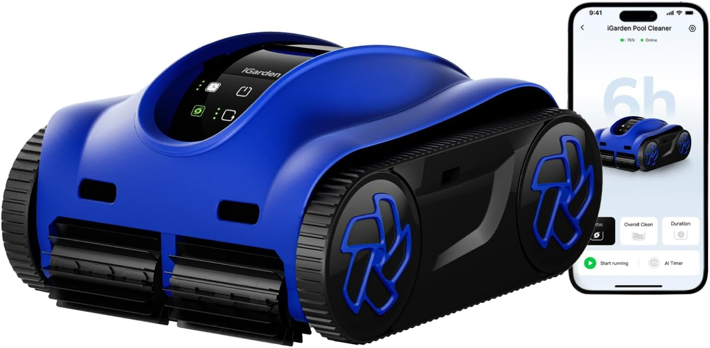
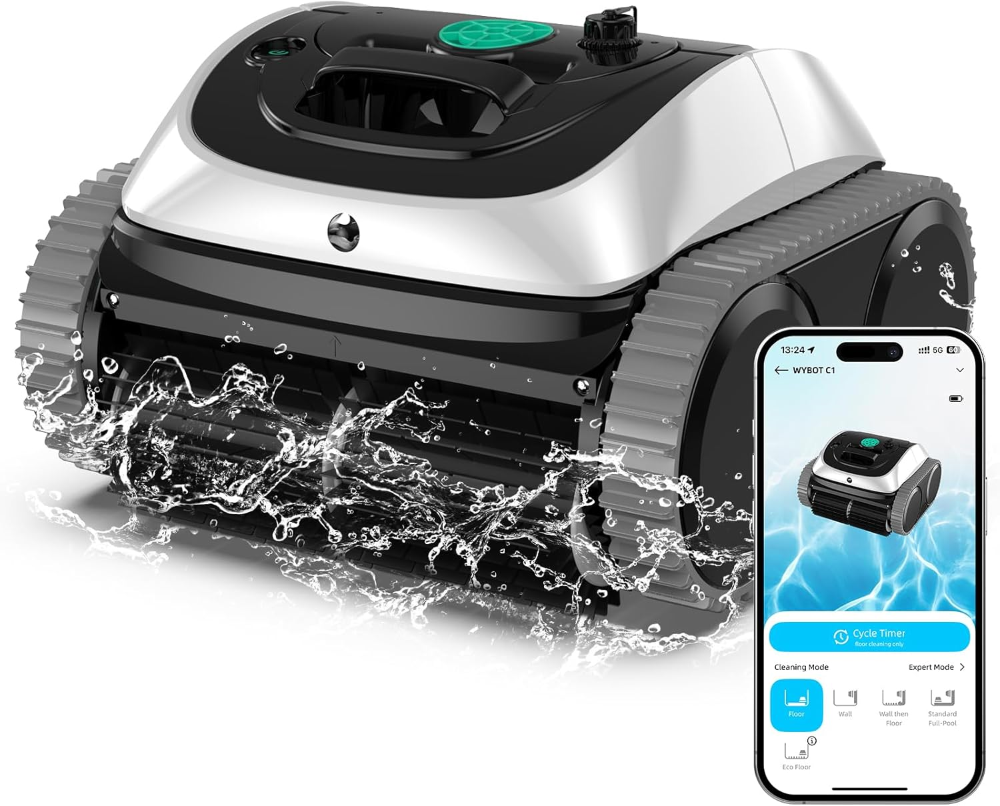
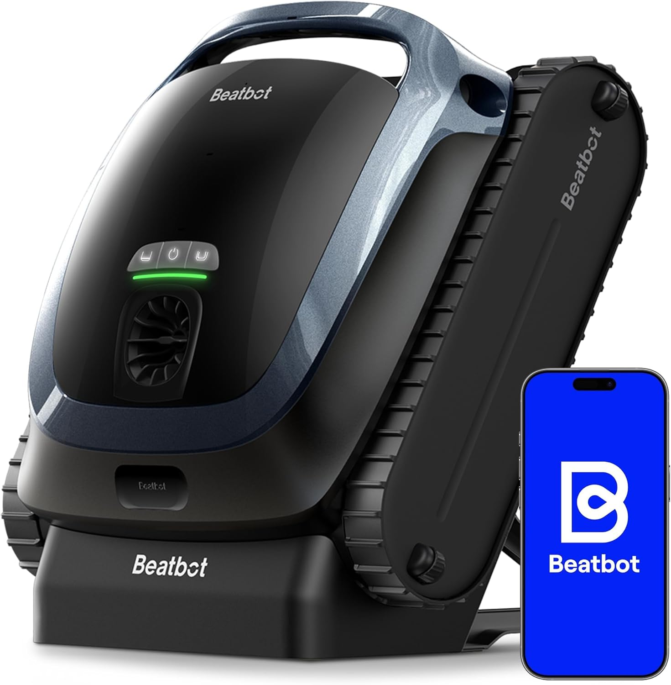

Los robots inalámbricos han dado un salto enorme en los últimos dos años. Más autonomía, mejor app, luz nocturna... pero también más dudas. Aquí las resolvemos todas.
Hace tres años, cuando alguien te decía que tenía un robot de piscina sin cable, la primera pregunta era "¿y cuánto dura la batería?" con cierto escepticismo. Tenían razón en preguntar — los primeros modelos inalámbricos eran una decepción: 60 o 70 minutos de autonomía, sin subir paredes y con una filtración bastante mediocre.
Lo que ha pasado desde entonces ha sido rápido. Los modelos de 2024 y 2025 llegan con 150, 180 e incluso 360 minutos de batería. Limpian paredes. Tienen app. Algunos incluyen luz nocturna para que el robot trabaje mientras duermes y tú te despiertes con la piscina lista — sin haber movido un dedo.
Y el detalle que más valora quien ha usado los dos tipos: sin cable, no hay nada flotando en medio del agua. Sin ese tubo cruzando la piscina de lado a lado acumulando hojas e insectos en la superficie. Solo metes el robot, das al botón y te olvidas.
Esta es la pregunta que más recibo, y tiene trampa: depende del modelo. No todos los robots sin cable limpian lo mismo, y conviene saber exactamente qué zonas cubre el que vas a comprar antes de pagar.
Hay tres niveles de limpieza:
Si vas a invertir en un robot sin cable, mi recomendación es que como mínimo limpie paredes. La diferencia de precio suele ser pequeña y la diferencia en resultado es enorme.
Aquí hay algo que muy poca gente explica bien antes de que compres: los robots no se adaptan igual a todas las formas de piscina.
Piscinas rectangulares: son el escenario ideal. Los robots modernos hacen un mapeo en cuadrícula muy eficiente y cubren prácticamente el 100% del fondo sin problema. Si tienes una piscina rectangular estándar, cualquier modelo de gama media te va a funcionar bien.
Piscinas con ángulos a 90°: los robots con ruedas de giro corto se manejan mejor en esquinas. Los modelos más básicos tienen un radio de giro mayor y pueden dejar las esquinas sin limpiar. En este caso, vale la pena buscar uno que indique específicamente buena cobertura en esquinas.
Piscinas redondas o con formas irregulares: los robots modernos con navegación inteligente se adaptan sorprendentemente bien. El algoritmo de mapeo detecta los bordes y ajusta el recorrido. Dicho esto, en piscinas con curvas muy pronunciadas o formas muy asimétricas, siempre quedará algún rincón que el robot no alcanza. No es un defecto del robot — es geometría.
Seré directo: los escalones son el talón de Aquiles de casi todos los robots de piscina, con cable o sin cable.
Un robot limpiafondos está diseñado para moverse por superficies planas e inclinadas de forma progresiva. Cuando se encuentra con un escalón, tiene dos opciones: sortearlo siguiendo el borde, o intentar subir. La mayoría de robots estándar no suben escalones — los bordean.
Esto significa que si tu piscina tiene escalones de acceso en una esquina, esa zona va a quedar siempre fuera del recorrido del robot. No es un error de funcionamiento, es una limitación de diseño. Lo que sí hacen bien la mayoría de robots es limpiar la superficie horizontal de cada escalón si son amplios y el robot pasa por encima.
¿La solución práctica? Pasar el cepillo manual por los escalones una vez a la semana y dejar que el robot haga el 95% del trabajo. No es tan dramático como parece — los escalones son una superficie pequeña comparada con el resto.
180 minutos de autonomía, filtración de 3 micras, limpia paredes y línea de flotación, y tiene app. Si tuviera que quedarse con uno solo en este rango de precio, sería este. La filtración de 3 micras es especialmente llamativa — captura incluso partículas que otros robots de cable dejan pasar.

6 horas de batería. No hay otro robot sin cable que se le acerque en este aspecto. Si tienes una piscina grande o simplemente quieres dejarlo toda la tarde sin preocuparte, el iGarden K60 es la respuesta. Pantalla táctil y temporizador con IA incluidos.

Por menos de 250 euros tienes un robot sin cable que sube por las paredes. Hace dos años eso no existía en este precio. No tiene app ni filtración ultrafina, pero para una piscina estándar de uso familiar hace un trabajo más que decente.

Si el presupuesto no es el problema, el Beatbot AquaSense 2 es el robot sin cable más sofisticado de esta selección. Se aparca solo en la superficie cuando termina — lo que significa que no tienes que pescarlo del fondo — y hace una doble pasada en la línea de flotación que ningún rival iguala.

La batería es el componente más delicado de un robot sin cable, y también el que más preguntas genera. Algunas cosas que conviene saber:
La autonomía varía según las condiciones. Los 180 minutos que indica el fabricante son en condiciones ideales — piscina limpia, temperatura del agua moderada, fondo plano. Si hay mucha suciedad o la piscina tiene muchas paredes que subir, el motor trabaja más y la batería dura menos. En la práctica, cuenta con un 15-20% menos de lo que dice la ficha técnica.
El calor es el enemigo de la batería. No dejes el robot cargando al sol directo. Guárdalo en un lugar a la sombra y, si puedes, espera a que se enfríe un poco antes de ponerlo a cargar. Esto aplica especialmente en verano en España, donde las temperaturas en exterior pueden pasar de 40 grados.
No la dejes descargada completamente. Las baterías de litio prefieren cargas parciales a ciclos de descarga total. Si puedes, ponla a cargar cuando le quede un 20-30% en lugar de esperar a que se apague sola.
Depende del modelo y la capacidad de la batería. Los modelos con 90-120 minutos de autonomía suelen cargarse en unas 3-4 horas. Los que tienen 180 minutos necesitan entre 4 y 6 horas. El iGarden K60, con 6 horas de batería, puede tardar hasta 8-10 horas en cargarse completamente. La solución práctica: ponlo a cargar por la noche y tendrás la batería llena por la mañana.
Algunos sí, otros no. Los robots con ventosas o ruedas diseñadas para subir paredes de gresite pueden tener problemas con las paredes de PVC o lona de las piscinas desmontables — no se adhieren igual. Busca específicamente modelos que indiquen compatibilidad con piscinas desmontables, como el iGarden K60 o el WYBOT C1. Si tienes piscina desmontable con paredes de plástico rígido, las posibilidades son mejores que con paredes de lona.
El robot limpia la suciedad del fondo y las paredes independientemente de cómo esté el agua. Pero si el agua está completamente verde por algas, lo primero es tratar el agua con cloro y algicida, dejar que la depuradora trabaje y luego meter el robot. Si metes el robot en agua muy turbia, el filtro se satura muy rápido y tienes que limpiarlo varias veces durante el mismo ciclo.
Los modelos con app y temporizador, sí. El Aiper Scuba S1 y el iGarden K60 tienen esta función. Programas la hora desde el móvil, el robot arranca solo, limpia mientras duermes y cuando te despiertas la piscina está lista. Algunos modelos incluso tienen luz LED para trabajar en la oscuridad sin problema.
Se para y se queda en el fondo hasta que lo saques. No es un problema grave, pero sí un inconveniente. Por eso es importante elegir un modelo con autonomía suficiente para el tamaño de tu piscina. Como regla general: para piscinas de hasta 45 m², 90 minutos es suficiente. Para piscinas de 45-100 m², busca al menos 150 minutos. Para más de 100 m², 180 minutos o más.